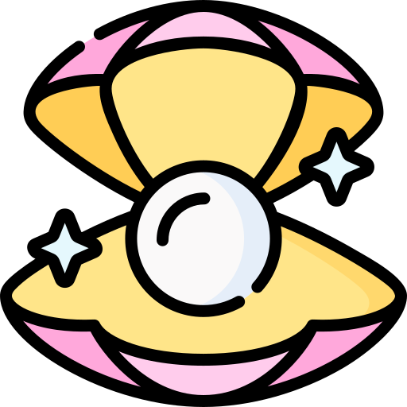

2025-06-24
"진주는 조개가 모래알 같은 자극물에 의해 상처가 생겼을 때, 그에 대한 내부반응에 의하여 만들어지는 것이다. 상처 회복에 필요한 온갖 성분이 상처 입은 부분으로 급히 보내지고, 오랜 시간 동안 상처를 치유하다가 마지막으로 얻어지는 것이 진주이다."
– 정승호, 『내 인생에 힘이 되어준 한마디』

우리는 때때로
상처를 미워하고, 원망하고, 심지어 증오하기도 합니다.
상처를 멀리하고, 회복에 필요한 그 어떤 노력도 하지 않은 채 절망의 나날을
보내기도 하죠.
하지만 진주는 상처에서 태어납니다.
조개는 상처를 입었을 때, 그 상처를 외면하지 않고 오랜 시간 정성을 다해
보듬고 감쌉니다.
그렇게 고통을 견뎌내는 인내의 시간 끝에, 마침내
아름다운 진주가 만들어집니다.
작가는 묻습니다.
왜 우리에게는 상처가 필요할까?
왜 우리에게는 슬픔이, 눈물이 필요할까?
그것은 우리에게도 진주가 필요하기 때문이라고
말합니다.
상처를 보듬고, 감싸고, 인내하는 그 시간 속에서
나만의 아름다움이, 나만의 진주가
만들어지기 때문입니다.
오늘, 혹시 마음에 상처가 있다면
그 상처를 미워하지 말고, 조개처럼 다정하게 감싸 안아보세요.
상처를 견디는 인내의 힘이 언젠가 당신만의 진주를
만들어줄 것입니다.